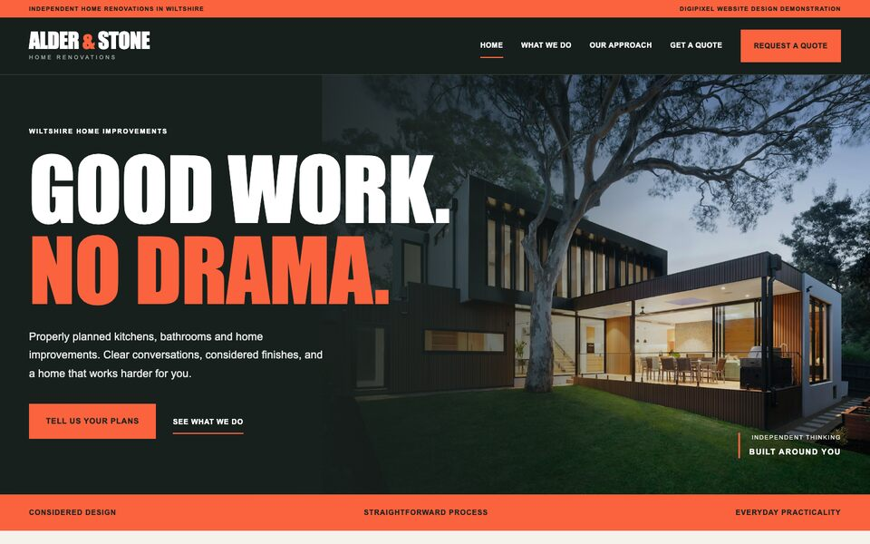
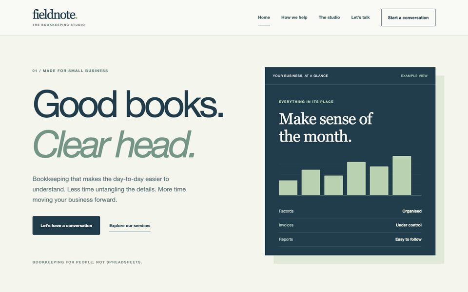
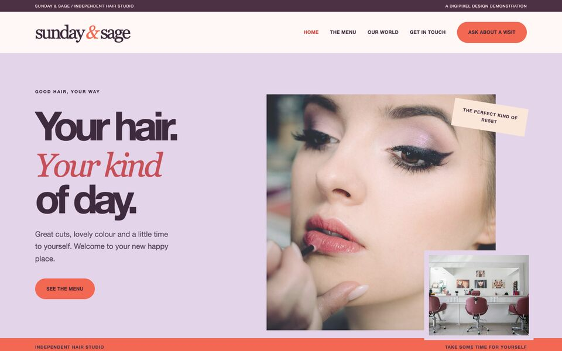

Practical websites, big personality
Three different businesses.
Three ways to stand out.
A small collection of original DigiPixel website concepts, designed around what local and independent businesses actually need: to look great, explain what they do and make it easy for customers to get in touch.

CONCEPT 01 · Trades & home improvements
Alder & Stone
Industrial, high contrast, quote led. Strong typography and full width imagery.
Explore the website
CONCEPT 02 · Professional services
Fieldnote
Minimal editorial design with a dashboard instead of a photographic hero.
Explore the website
CONCEPT 03 · Salon & beauty
Sunday & Sage
Asymmetric editorial salon design with an entirely different layout.
Explore the website